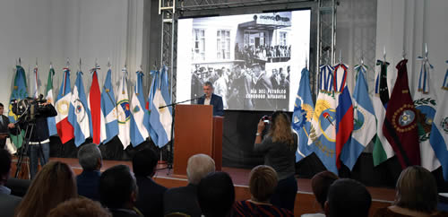
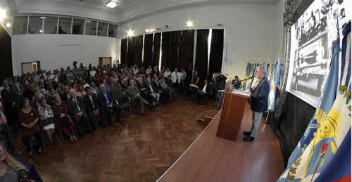
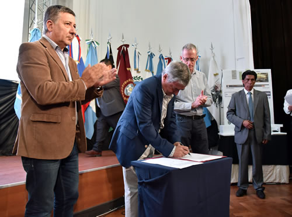

Real Chubut - Agencia de Noticias


Das Neves firmó contrato para la construcción del edificio del Archivo Provincial para la Memoria

En el Día Nacional de la Memoria por la Verdad y la Justicia.
Lo efectuó al presidir el acto por el 41° aniversario del último Golpe Cívico Militar. El mandatario brindó un emotivo discurso indicando que “el dolor y la lucha deben ser de todos”.
El gobernador del Chubut, Mario Das Neves, presidió este viernes en Casa de Gobierno el acto por el Día Nacional de la Memoria por la Verdad y la Justicia y en la oportunidad firmó el contrato de obra por más de 9 millones de pesos para la ejecución del edificio del Archivo Provincial para la Memoria en Trelew.
La emotiva ceremonia en conmemoración al 41º aniversario del último Golpe Cívico Militar se realizó ante un colmado Salón de los Constituyentes y formaron parte de la misma el subsecretario de Derechos Humanos, Oscar Petersen; referentes de entidades y organizaciones de Derechos Humanos, familiares de desaparecidos y ex presos políticos.
Además se encontraban presentes ministros, secretarios, subsecretarios, presidentes de entes descentralizados, diputados provinciales, legisladores nacionales, autoridades del Poder Judicial, intendentes de distintas localidades, concejales, entre otros.

ACTO
Al iniciar el acto por el Día Nacional de la Memoria por la Verdad y la Justicia, se entonaron las estrofas del Himno Nacional Argentino y se realizó un minuto de silencio.
Además Dago Merino fue el encargado de leer el texto denominado: “Por un próximo amanecer de colores nuevos”, emocionando a los presentes con su interpretación.
Seguidamente el gobernador Das Neves efectuó la firma del contrato de obra con la empresa Didelco S.R.L. para la construcción en Trelew del edificio del Archivo Provincial para la Memoria con un monto de 9.580.700,24 pesos.
También se presentó el dúo musical “Las casualidades no existen”, integrado por Daniela Aarrechea y Norberto Lastra, que interpretó “ausencia”.
“NO OLVIDEMOS”
El gobernador en la oportunidad brindó un emotivo discurso en conmemoración a una fecha, y comenzó expresando que “han pasado 41 años y las señales en la sociedad son visibles por la ausencia de los que no están y el dolor que nos dejó el no saber de su destino”.
“No permitamos que se opaque la memoria. No olvidemos ni nosotros ni permitamos que lo hagan las generaciones que vienen cual es la verdadera historia y acompañemos a quienes desde el dolor de lo perdido siguen luchando por la identidad y la justicia” porque “debe ser el dolor de todos y la lucha de todos”.
Afirmó en ese marco que “el 24 de marzo es una fecha de reflexión y de recuerdo de cada uno de aquellos que ya no están. Nos acordamos de sus sueños, sus utopías, sus proyectos de vida que el odio dejo truncos en el camino”.
“Y es nuestro deber como militantes de la vida, como hombres de la democracia honrar de la mejor manera sus vidas y sus luchas trayendo lo mejor de cada uno de ellos al presente para construir entre todos un mundo justo, libre y soberano. Solo de esta forma venceremos la derrota”.
El mandatario expresó que “han pasado 41 años y quiero que esta fecha nos impulse desde la memoria para hablar también del hoy y del futuro. Sin olvidar el pasado”.
“De un proyecto humanista que tiene el amor y la solidaridad como motor de todas nuestras acciones”.
“RESPETO ABSOLUTO A LOS DERECHOS HUMANOS”
Por eso “creo que la mejor manera de honrar este día y a nuestros muertos es ir construyendo un Estado que respete en forma absoluta los Derechos Humanos, teniendo la dignidad de cada uno de nuestros habitantes como eje de gestión irrenunciable” porque “aquel fue un tiempo de oscuridad para quienes lo sufrieron”.
Manifestó que “la vida era una lucha y en esa lucha morían pero nunca pudieron decir por qué morían” por eso “debemos anotar lo que pasó. Y no olvidar ni a unos ni a otros. No olvidar a los que mataron y mucho menos olvidar a los que murieron”.
“Ni a los que les quitaron la infancia, entristecieron su adolescencia y abortaron su juventud no permitiéndoles saber quiénes realmente eran”.

El gobernador continúo su discurso expresando que “dieron el dolor, todo el dolor. Dieron sus vidas, todas sus vidas”.
“Pero vida y dolor se fueron transformando en esperanza” subrayó y agregó que “es verdad que nunca nadie supo dónde iban a morir y ni siquiera podemos saber si murieron”
“Tenían un pacto de lucha por la vida, pero les hicieron firmar un pacto con la muerte” porque “la dictadura construyó una patria sin abrigo y el corazón herido y fatigado”.
“Compartió un silencio manchado por el crimen, la desaparición y la tortura” porque “era un ejército oscuro y caminante, construyendo un plan sistemático de intenciones siniestras para diezmar a la sociedad y ponerla a sus pies”.
“Miles de muertos, de desaparecidos, de torturados y cientos de niños robados es el resultado de un tiempo que seguiremos mirando” y que por eso “quise traer en este día, como un repaso de la historia aún reciente para quienes la han sufrido y para quienes aún sigue ardiendo”.
“EXILIOS”
En otro tramo de su discurso Das Neves manifestó que “quiero referirme a otro plan sistemático que también arrasó con sueños y utopías: el de los exilios”.
“Esos hombres y mujeres que debieron dejar la tierra en la que nacieron sin saber si volverían o si se habían ido para siempre” porque “esta era su patria pero fueron condenados al destierro.
Sostuvo que “el exilio representa una muerte apurada para quienes deben huir de sus propias raíces para salvar sus vidas, para continuar sus luchas, para seguir alimentado tan siquiera un poco de sus esperanzas”.
“Se fueron lejos. Huyendo de un horror que los perseguía aún en otras tierras lejanas”.
Señaló que “el exilio fue otra forma de tortura igual de dolorosa quizá no para el cuerpo pero si para el alma”.
“DIGNIFICAR LA VIDA”
El mandatario manifestó que “no olvidar no representa una simple frase sino una obligación para cada uno de los argentinos” porque “se sabe que dejar de lado la historia puede pagar el alto precio de que vuelva a repetirse”.
“Hay que darle una permanente mirada al pasado para poder pensar y planificar el futuro”.
“Recuperamos en parte desde 1983, nuestros derechos como humanos. Gozamos de libertad, dejamos atrás el oscurantismo y la represión, pero creo con sinceridad que todavía nos queda alguna deuda” porque “los derechos humanos e
n un país libre, con su gente libre y sus pensamientos libres también pasan por dignificar su vida”.
“Y dignificar la vida es saldar las deudas que las instituciones de la democracia tienen con la gente”.
Das Neves expresó en ese sentido que “es tener a los maestros y a los chicos en las escuelas enseñando y aprendiendo, es la casa propia, es la seguridad, la salud, la cárcel para los delincuentes y los corruptos, es la libertad de decir, es el derecho a soñar y es luchar por una vida mejor”.
“Si hay una obligación de no olvidar el pasado también hay una obligación de pensar y asegurar el futuro”, afirmó.
“De aquella nefasta experiencia debemos recoger el guante y pensar que vendrá un tiempo con más verdad, con más memoria, con más justicia”.
“Podemos, debemos construir aquel país que muchos de los que se fueron querían. No debe haber olvido” y agregó que “porque por nuestras voces aquellas voces, que quisieron callar y condenar a un ancho silencio, nos seguirán hablando”
“Aún con sus heridas, nos volverán a decir que se puede cambiar el mundo. Nos volverán a decir que un mundo mejor es posible”, concluyó.
PUBLICIDAD